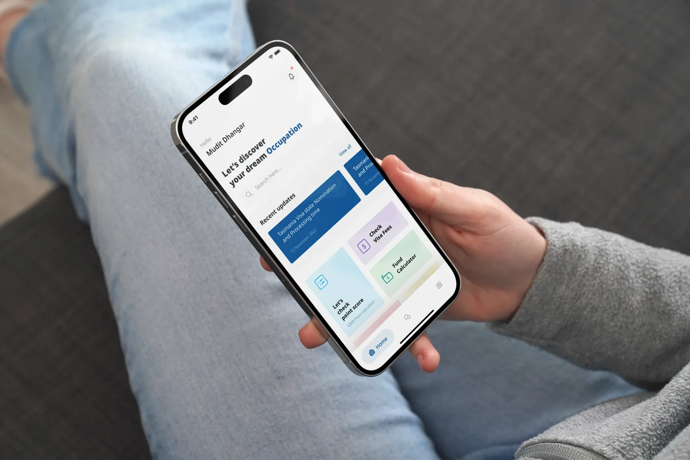
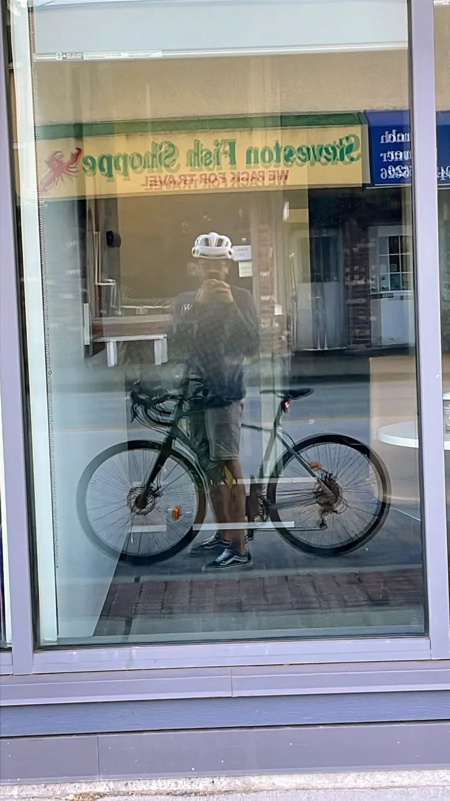
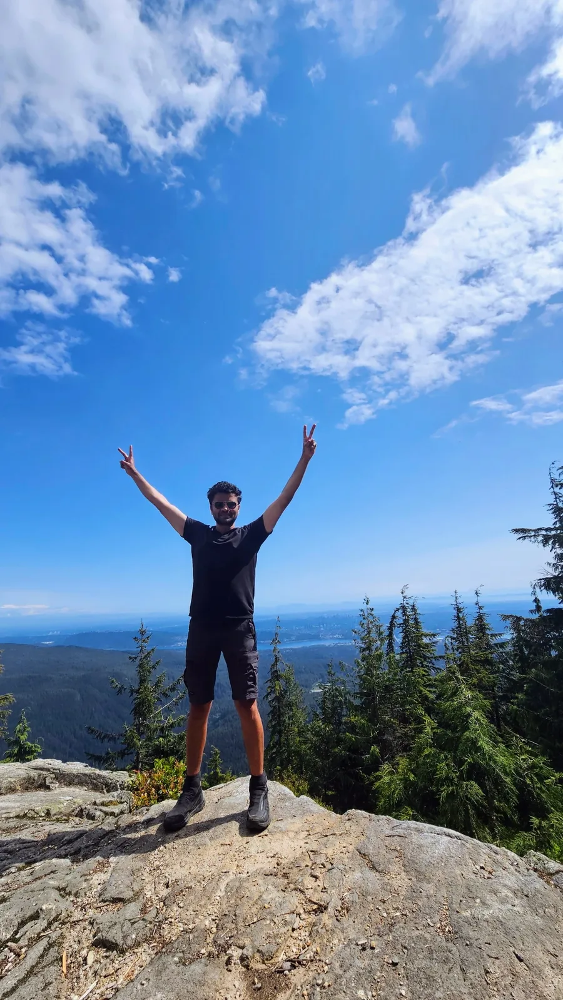

MuditDhangar
Product designer in Vancouver. Research, flows and visual design, then a working build with Claude Code.
Selected Work
(6)King Pins
Research, brand to product, 3D and motion, shipped with AI
Kisan
Research, flows, brand to product
CredNest
Research, information architecture, visual design
Vape Spot
Research, brand to product, shipped with AI
OccuSearch
Product Design, User research, Prototyping
Kondesk Mobile
Information architecture · Interaction design · Prototyping · UX validation
King Pins
Research, brand to product, 3D and motion, shipped with AI

Kisan
Research, flows, brand to product

CredNest
Research, information architecture, visual design

Vape Spot
Research, brand to product, shipped with AI

OccuSearch
Product Design, User research, Prototyping

Kondesk Mobile
Information architecture · Interaction design · Prototyping · UX validation

About Me
I studied computer science in India, then spent two years as the only designer on five mobile apps at Konze. In 2023 I moved to Vancouver to study web and mobile app design at Langara College.
Now I work AI-first. I do the research, flows and visual design, then build and ship with Claude Code, so a design doesn’t stop at a Figma file.

How I approach projects from start to finish
- 01
Understand
I start with people and evidence: interviews, order history, an audit of what’s already live. Five farmers for Kisan, five years of orders for King Pins.
- 02
Map and design
Flows and information architecture come before screens. Then wireframes, visual design and a component kit the whole team can build from.
- 03
Build with AI
I write a spec Claude Code can build from: screens, rules and edge cases. I read what comes back and send it back when it’s wrong.
- 04
Test and measure
I test like a user, with browser automation and real people, then check the numbers after launch and keep improving.
Experience
I design products and ship them. At King Pins I designed and built a booking system with Claude Code that took about 450 paid orders and CA$62k in its first seven weeks. Before that I spent two years as the only designer on five mobile apps at Konze, including OccuSearch with 10K+ downloads.
King Pins
Product Designer and Developer
2026 – Present
Konze
UI/UX Designer
2021 – 2023
What I bring
01
Research first
Five farmers for Kisan, student interviews for CredNest, five years of orders for King Pins and a theme audit for Vape Spot.
02
Brand to product
One look from logo to screen to print. Kisan’s two-leaf K runs through the app, and King Pins’ posters and website speak the same language.
03
3D and motion
An isometric floor plan that zooms with GSAP, poster scenes lit in Blender, and a Rive motion language across five apps at Konze.
04
Designed and shipped with AI
King Pins and Vape Spot are live, built with Claude Code. I made the design calls, reviewed every change and tested it like a guest.
Off the Clock
I love engaging in activities that keep me inspired and grounded. Cycling through Vancouver’s scenic routes clears my mind and gives me space to think, while hiking reconnects me with nature and brings fresh clarity. I also enjoy wandering through downtown, taking in bold architectural forms; it’s one of the ways I recharge and spark new ideas as a designer.


